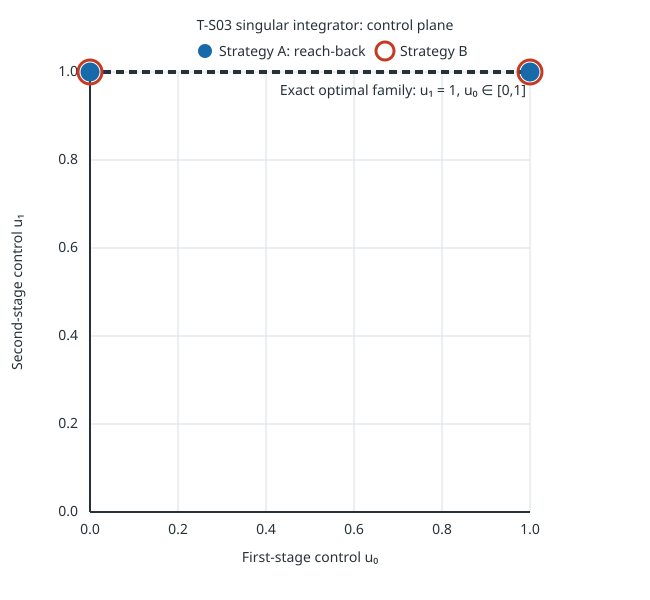

This synthetic two-stage scalar case has x₀=0, xₜ₊₁=uₜ, uₜ∈[0,1], and terminal cost (x₂−1)². Since x₂=u₁, the exact optimal family is u₀∈[0,1], u₁=1; the first control is free and the terminal objective is singular with respect to it.

One A/B warmup pair was excluded; five measured pairs alternated order. All 12 attempts completed, each reported its profile-specific complete-family verification, and both selected histories passed original-model binding, feasibility and objective replay with objective zero. The record keeps the separate trajectory-verifier optimality and completeness fields as unsupported; the exact family statement above follows directly from the stated dynamics and objective.
| Strategy | Median end-to-end (ms) | Range (ms) |
|---|---|---|
| Strategy A: reach-back | 4.693297 | 4.635259–4.999275 |
| Strategy B: direct joint optimization | 1.255685 | 1.222790–1.313864 |
Timing covers strategy preparation through selection and original-data verification of two witnesses. It excludes process startup, shared scenario/provider setup, serialization, build and rendering. This five-pair result on one small synthetic fixture is descriptive and does not establish a general solver winner.
The complete capture process tree ran under a 2 GiB cgroup-v2 memory cap with swap disabled and a 300-second suite-level watchdog. Observed peak process-tree memory was 20,144,128 bytes, with zero cgroup max/OOM events. The watchdog covers the whole invocation, not each attempt. This is below the comparison contract's per-attempt default, so it does not satisfy that limiter profile.
0f407af581c3a5b536d5d76f6e889fef542c4597a1d6fa3f349bfb6032736e5f6b52e0ff52f8bdece8cfe54752de12c9cf314e4dbcf51736bf00389ca1eb0579268d383f4a593c6953f7637be490672afa1d578bf87118d2114992fea92625e60599ff6937de694a189389cc3e173187f2d4f73eThis adds one Strategy A/B synthetic singular-objective slice to #597. It does not complete the T-S01/T-S02/#421/B04 matrix, external comparisons, publication catalogue integration or general performance ranking.